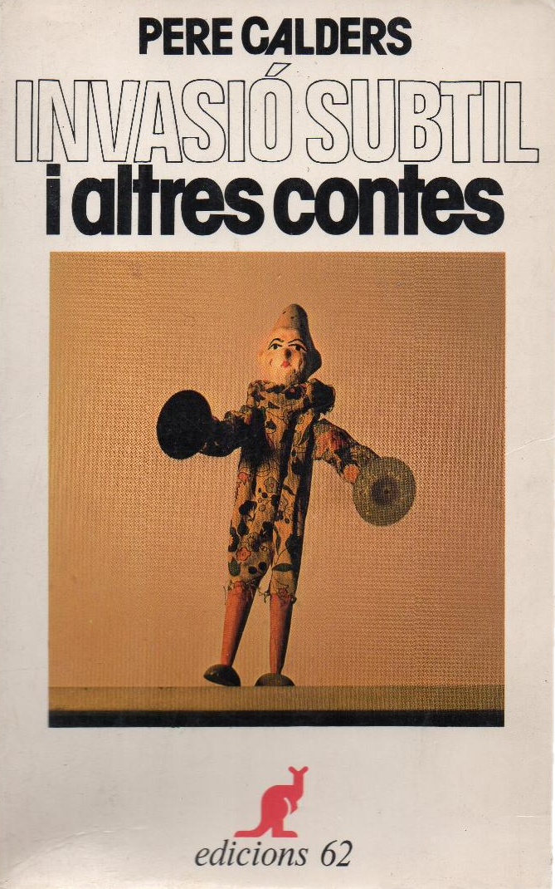

Has reflexionat mai sobre la teva relació amb la lectura? Fes un pas més per descobrir-te com a lector.
El riu de lectura ha capturat un lapse de temps breu i unes poques lectures, sense gaires detalls ni explicacions.
Tanmateix, el que som com a lectors és alguna cosa bastant més indefinida i difícil de fixar, perquè flueix i avança. Cada trajectòria lectora és única. Te’n mostrem quatre:
――― 1 ―――
“No quiero ser culto, no me importa, lo que me interesa, en lo que toca a la literatura, es el hecho de sentir una emoción, de sentirme cerca de otras personas que pueden sublimar pensamientos que yo puedo experimentar. [...] Hay una sola cosa que es capaz de oponerse a esta sociedad: lo imaginario, el espacio sensible. El espacio sobre el que la sociedad no puede ejercer ningún control.”
Matoud
――― 2 ―――
“La lectura para mí no es una diversión, es algo que me construye. La biblioteca me dio la posibilidad de imaginar películas, mis propias películas, como si fuera un realizador. Muchas veces iba a allí a leer cómics, pero me quedaba en el área de libros. Con esos librotes gordos, a veces leía el resumen, me imaginaba la historia, leía la primera página, la primera línea y me contaba todo lo que pasaba.”
“... quan a Camprodon, vaig adonar-me que hi havia una llibreria papereria, vaig fer-hi cap. I va ser així com, a l’edat avançada de dinou anys, vaig entrar en possessió del meu primer llibre en català:

Vaig escollir aquest recull de contes segons un criteri molt rigorós: era el volum més prim de tots. Només així vaig aconseguir vèncer una certa por: la de no aconseguir acabar el llibre triat, la d’haver de reconèixer que el català m’era més estranger del que suposava, la d’haver de rendir-me i abandonar la il·lusió de fer meva aquesta llengua, aquesta literatura, aquest país. I això era, ho sé per la data de la compra que vaig apuntar al llibre, el 17 de juliol de 1982.
I tal com m’ho temia, llegir Calders va ser un turment, alhora que una alegria. Vaig patir a cada plana. A tot arreu eixien paraules que no havia sentit ni vist mai, topava amb construccions sintàctiques que no entenia, m’entropessava amb imatges, metàfores, frases fetes. El bon Calders m’era una selva. Però vaig entossudir-me prou per acabar, exhaust, tots els contes del volum. No havia pensat mai que recuperar el català seria fàcil però vaig sentir un cert descoratjament. Què passaria quan ho provaria amb una novel·la? Gosaria fer-ho?”
Joan-Lluís Lluís, Els invisibles. Editorial L’Avenç, Barcelona 2020
Transcripció: Jo creixia en una casa en la que no hi havia llibres, i per tant la possibilitat d'accedir a la cultura estava bastant limitada. Amb l'escola vam anar a visitar la biblioteca municipal i vaig descobrir precisament que existia aquesta possibilitat.
Procedeixo d'una família molt extensa i fins als vuit anys vaig conviure els avis, els tietes, molts parents i moltes dones que precisament explicaven moltes històries al llarg del dia. I en el trasllat aquest que vam fer a Vic, totes aquestes històries van desaparèixer i tot aquest món i tota aquesta xarxa familiar es va fer molt més petita perquè van passar a ser pare, mare i els germans.
Per mi, la lectura va acabar substituint aquestes històries que explicaven les dones de la meva família, però també va ser una manera d'intentar entendre la nova societat en què jo estava creixent, aquest nou món al qual m'estava incorporant i que, evidentment, necessitava tenir molts elements per poder-lo desxifrar, perquè era una cosa completament nova. Des de llavors em vaig fer una lectora compulsiva i anava sempre que podia a visitar aquesta biblioteca i, amb els anys, a base de llegir, al final em va acabar sorgint la necessitat, jo mateixa, d'escriure les meves pròpies històries i d'intentar fer allò que tant de ple m'havia provocat durant tots aquells anys.
Com ens mostren aquests testimonis, la història de les nostres lectures i de la nostra relació amb allò que llegim és única, però ens hi podem acostar fent-nos algunes preguntes generals:
Com comencem a llegir? Per què? A través de qui? Per a què? On? Quina mena de textos? Quant de temps? En quins moments? Com ens hi sentim? Què fa que això canviï? Què ens porta d’una lectura a una altra? Tot això importa? A cada lectura, som millors lectors?
Atura’t i reflexiona
Pensa amb deteniment en la teva trajectòria lectora i escriu-la.
Has de partir d’experiències de lectura personals i de moments clau en la teva relació amb els llibres i la lectura. Els quatre testimonis i les preguntes que t’hem proposat t’hi ajudaran.
Comparteix el text al fòrum i comenta la trajectòria d’algun company que t’hagi cridat l’atenció particularment.